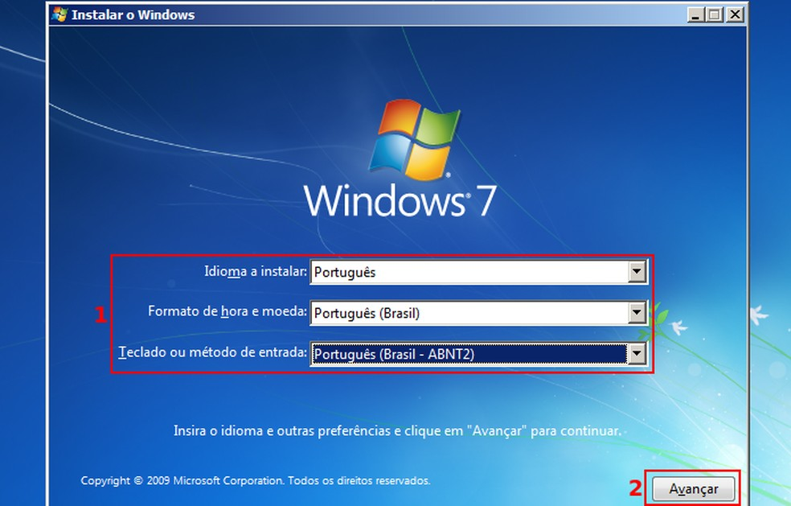
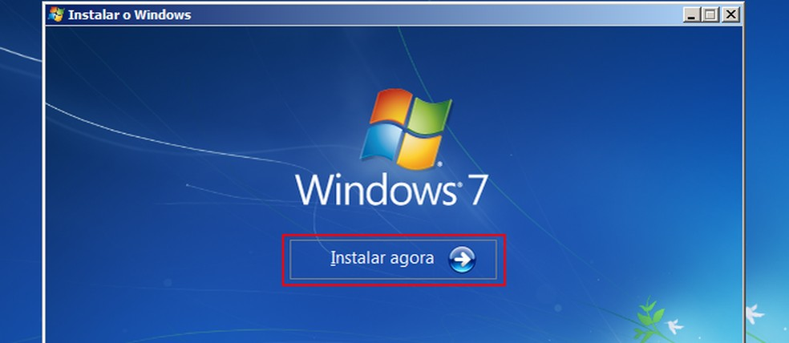
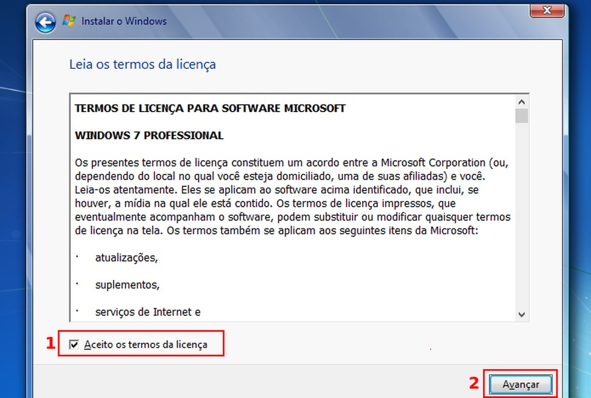
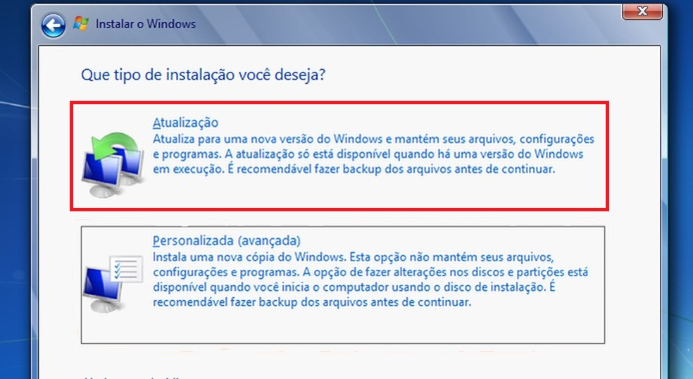
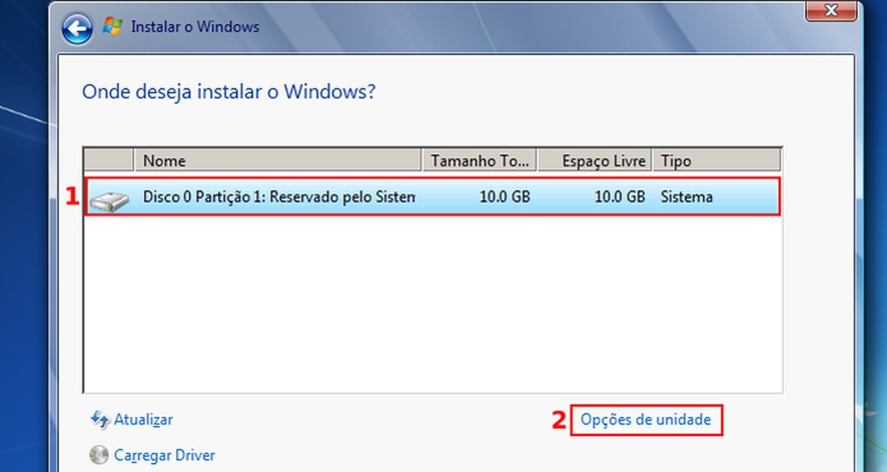
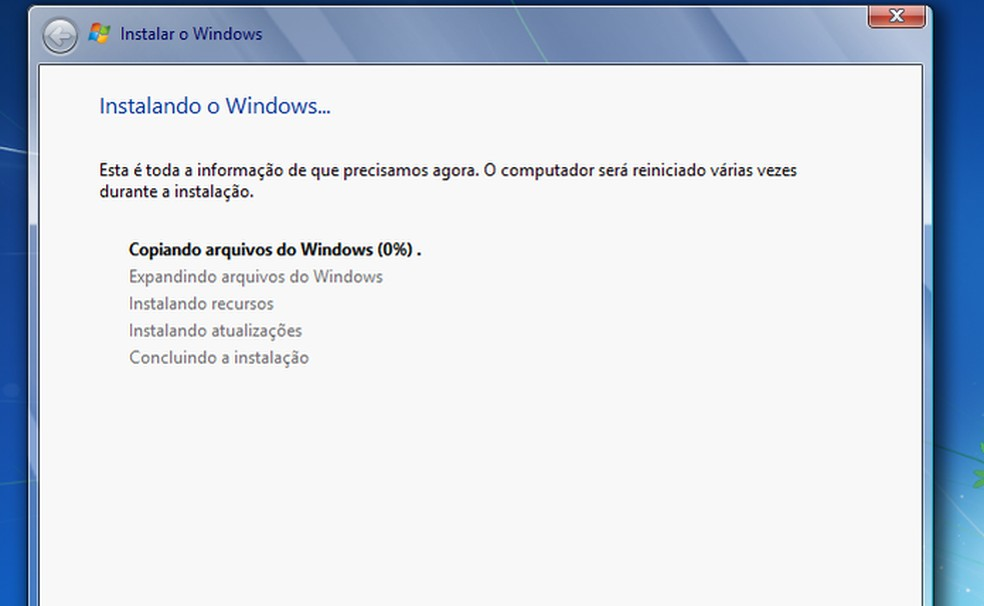
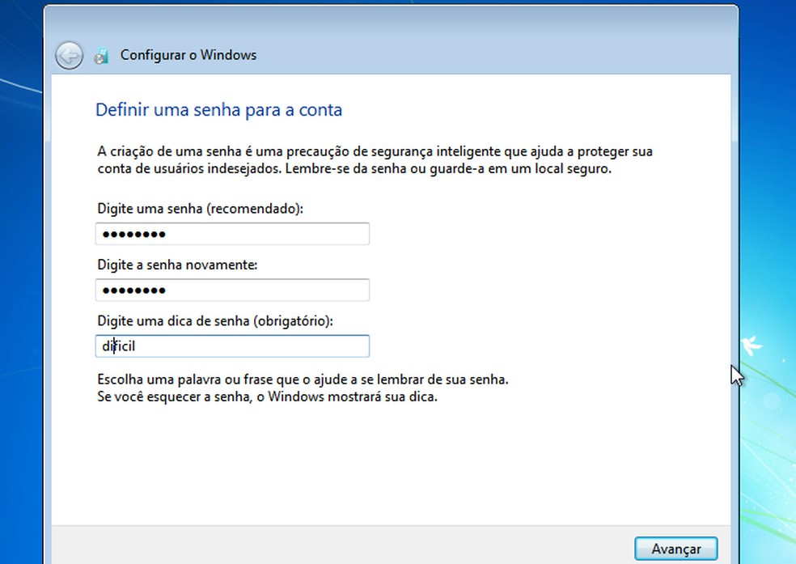
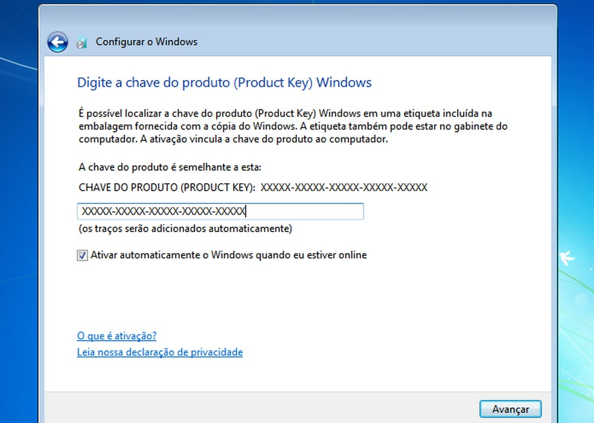
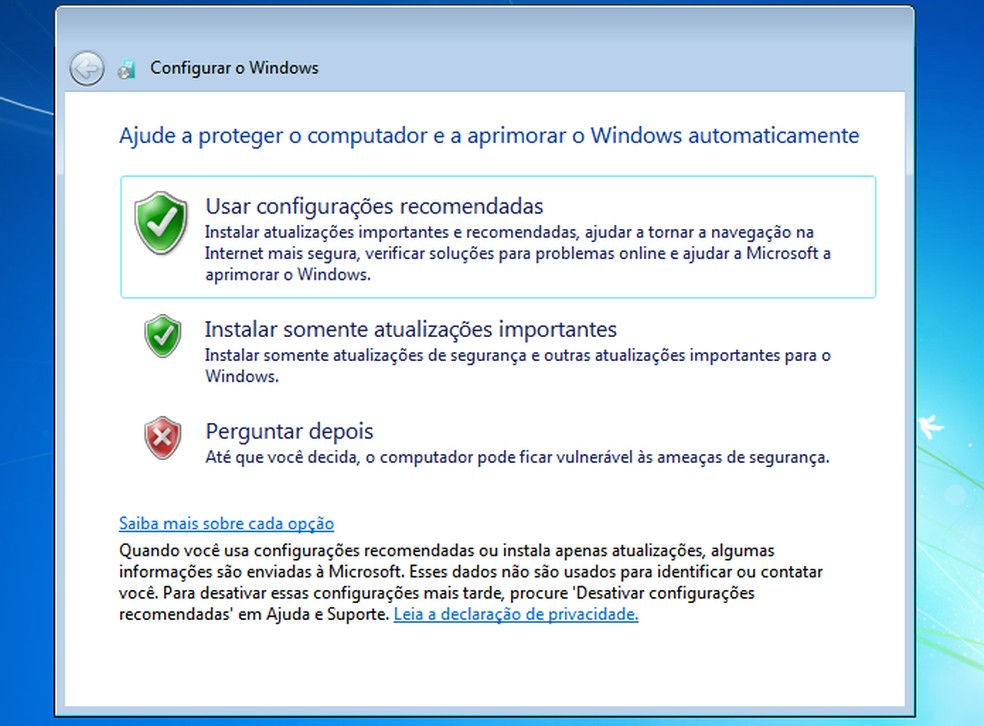
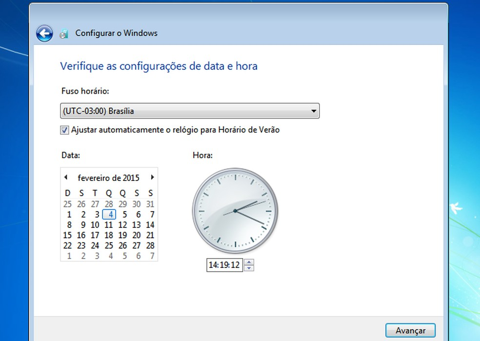

Como instalar o windows 7
Passo 1. Com o computador ligado, insira o pendrive com a ISO do Windows 7 no PC.
Passo 2. Reinicie o PC e aguarde o reconhecimento do disco
Passo 3. Quando aparecer a mensagem “Press any key to boot from CD or DVD”, aperte qualquer tecla.
Passo 4. No primeiro ecrã do instalador, clique na opção “Meu idioma é Português (Portugal)” ou outra linguagem que deseja usar.

Passo 5. Em seguida, escolha as opções de localização (idioma, formatos e layout de teclado). Depois, clique no botão “Avançar”.
Passo 6. No próximo ecrã, clique no botão “Instalar agora”.
Passo 7. Na janela seguinte, aceite os termos de uso do sistema e clique no botão “Avançar”.
Passo 8. No novo ecrã, selecione a opção “Atualização”.
Passo 9. Selecione o disco onde o sistema será instalado e clique em “Opções de unidade”
Passo 10. A partir desse ponto, você precisa apenas aguardar, pois o instalador irá preparar, copiar e instalar os arquivos.
Passo 11. Depois de passar da instalação e reiniciar, digite o nome de utilizador e do PC para o instalador. Em seguida, clique no botão “Avançar”.
Passo 12. No próximo ecrã, digite a senha do utilizador duas vezes. Depois escreva uma dica de senha que só você sabe, para quando precisar recuperar a senha. Para continuar, clique no botão “Avançar”.
Passo 13. No ecrã seguinte, digite a chave de ativação ou deixe em branco para ativar depois. Novamente, clique no botão “Avançar”.
Passo 14. Selecione uma das opções de atualização do sistema para melhorar a segurança. Clique no botão “Avançar”.
Passo 15. Configure as opções de data e hora do sistema. Para continuar a instalação, clique no botão “Avançar”.
Passo 16. Por fim, selecione o tipo de rede que o sistema usará para a conexão atual, clicando em um dos itens. Em poucos minutos, você verá a área de trabalho do Windows 7 e estará terminada a instalação.
Pronto! Você já está com o Windows 7 instalado. Agora é só ajustar algumas definições, como a resolução de vídeo, por exemplo, instalar os drivers e programas básicos, como um bom antivírus e antispyware.